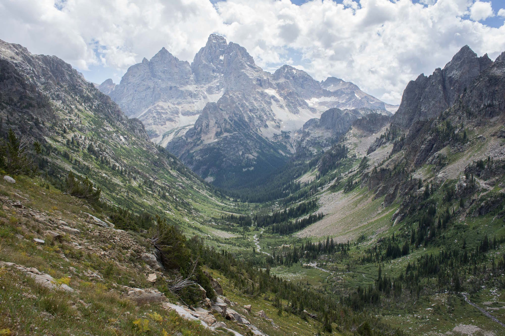
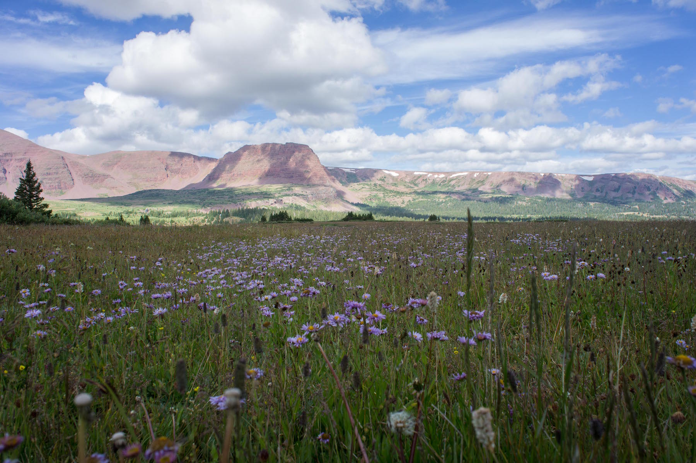
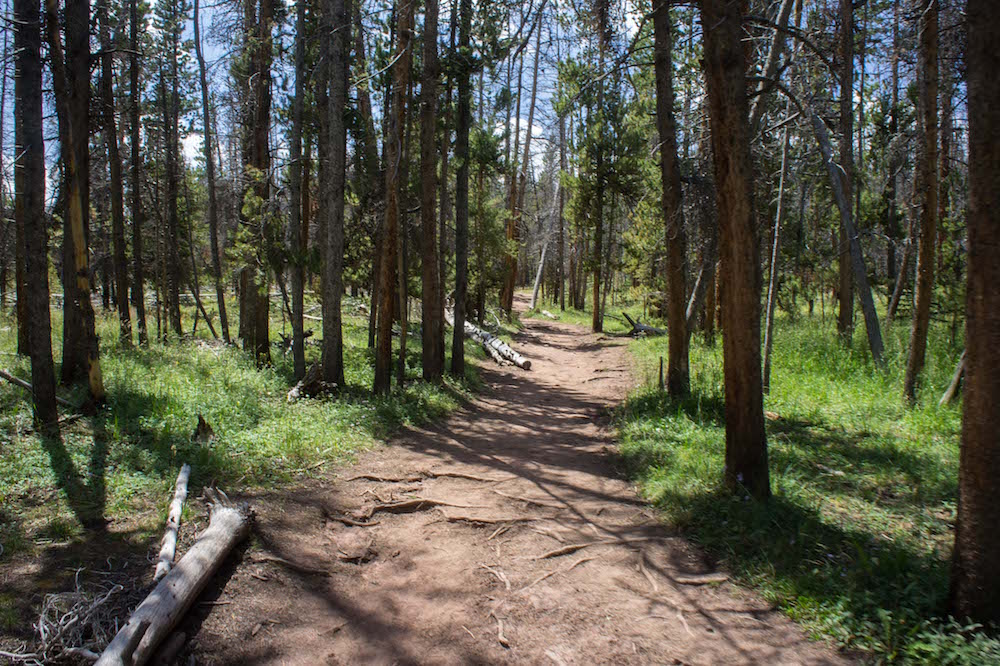
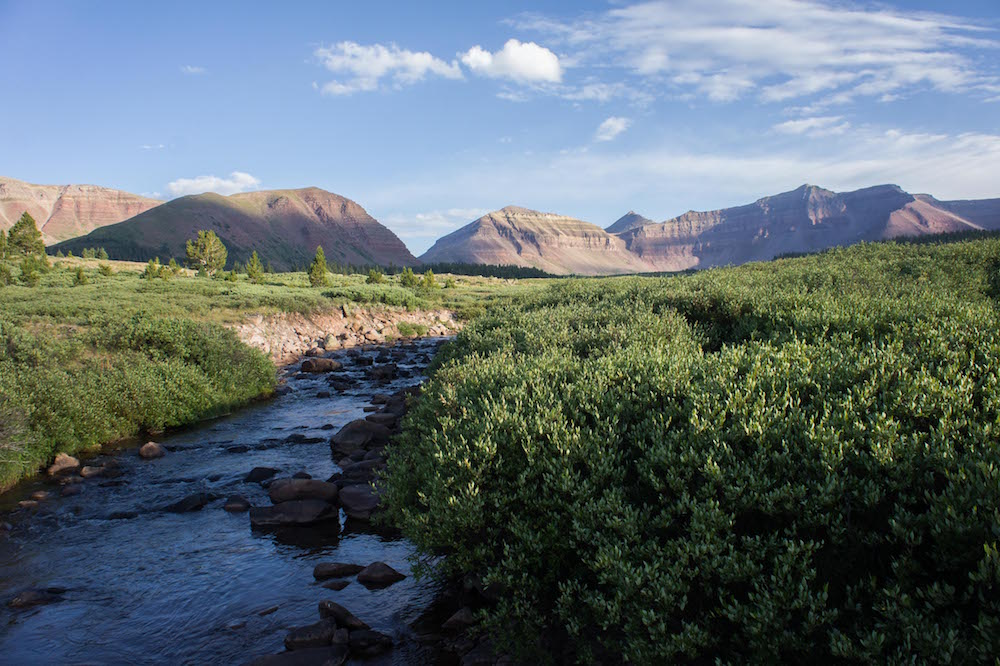

40˚ 26' 46.32" N
111˚ 37' 43.59" W
American Fork Canyon Utah
Snowy jaunts in the wintertime
Pine Hollow Trail
in a winter wonderland / 40˚ 26' 46.32"N, 111˚ 37' 43.59"W
However, great care must be taken regarding the avalanche danger, as this area has been known to be prone to such, at times taking lives.


Making our way south, at about 8 miles in we arrived to where we'd set up camp and go for some water where, among the signs of sunset against the ridge, in the photo to the right you can see Kings Peak sticking up behind the middle of the ridge that is to the right of the gap.

